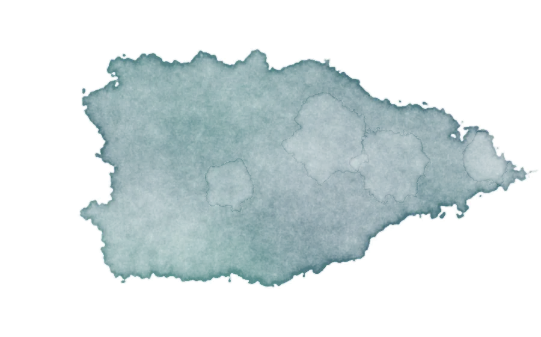
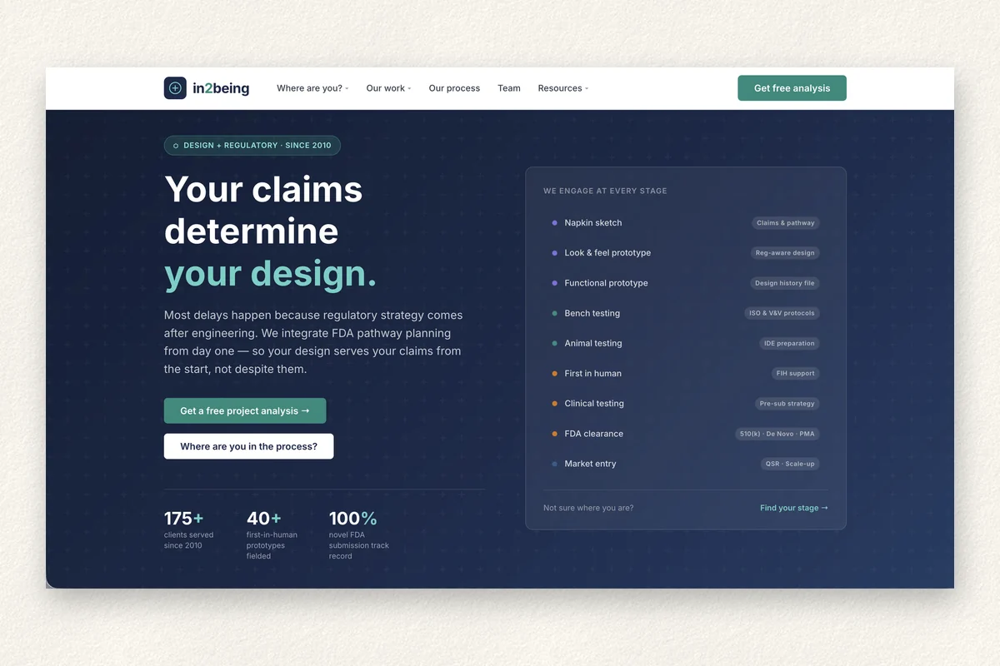

Internship · 2026
in2being
From “clients are confused” to better questions at onboarding
Clients of this medical device consultancy didn't consistently understand what it could do, and often trusted its advice only after a misstep had cost them. I interviewed 12 people across the firm and found six kinds of client confusion. The team now uses those areas to guide its questions when onboarding new clients.
- Role
- UX research, strategy, interaction design
- When
- Internship · June to August 2026
- Tools
- Figma, FigJam, PowerPoint, AI-assisted prototyping
- 16+ interviews with 12 people synthesized into a six-part taxonomy of client confusion
- A nine-stage client journey tool, a working prototype with device-class and plain-English toggles
- A usability plan with five participant segments and ten tasks, ready to run